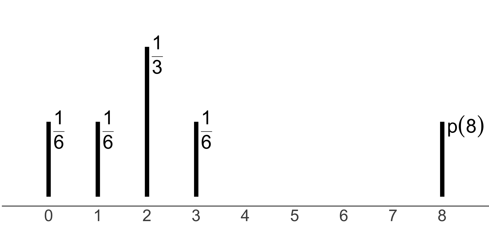

Lecture 5: Expectation and Variance
STA237: Probability, Statistics, and Data Analysis I
Michael Jongho Moon
PhD Student, DoSS, University of Toronto
Monday, May 29, 2023
Example: My coffee shop

- Suppose Michael opens a coffee shop and the daily number of customers follows a distribution described by the pmf on the left.
- How many customers does he expect per day? How variable are daily customer counts?
- The distribution contains the information. We will discuss how we represent them.
Expectation of a discrete random variable
Also called the expected value or mean.
The expectation of a discrete random variable \(X\) taking values \(x_1, x_2, \ldots\) and with probability mass function \(p\) is the number given by
\[E\left[X\right]=\sum_{i\in\{1,2,\ldots\}}x_i p\left(x_i\right).\]
Example: Coffee cups
Suppose Michael drinks \(Y\) cups of coffee
per day where \(Y\) is a random variable
that is defined by the probability mass function shown below.
What is the expected number of cups Michael drinks on any particular day?
\(p(8)=1-\frac{1}{6}-\frac{1}{6}-\frac{1}{3}-\frac{1}{6}=\frac{1}{6}\)
\(E[Y]=\sum_{y\in\{0,1,2,3,8\}}y p(y)\)
\(\phantom{E[Y]}=0\cdot\frac{1}{6} + 1 \cdot \frac{1}{6} + 2\cdot\frac{1}{3}\) \(\phantom{E[Y]=}+ 3\cdot\frac{1}{6} + 8\cdot\frac{1}{6}\)
\(\phantom{E[Y]}=\frac{8}{3}\approx 2.667\)
- Both mean and median represent a centre of the distribution.
- The mean is the centre of probability mass on a scale of the random variable whereas the median is the mid-probability point regardless of the values of the random variable.

- Imagine a scale with the centre at the mean and bar weights at the random variable values. I will be perfectly balanced.
- If you collected the weights on the left of the median and those on the right, they will be the same weight.
- In general, you can make them the same by dividing the weight at the median if they are not the same.
Example: Bernoulli distribution
Suppose \(B\sim\text{Ber}(0.7)\).
What is \(E[B]\)?
- \(E[B]=\sum_{b\in\{0,1\}}b \cdot p(b)\)
- \(\phantom{E[B]}=0\cdot(1-0.7) + 1\cdot(0.7)\)
- \(\phantom{E[B]}=0.7\)
Expectation of a Bernoulli random variable
In general,
\[E[B]=\theta\]
when \(B\sim\text{Ber}(\theta)\).
Example: Customer vs. passerby
Suppose the probability that any person passing by Michael’s coffee shop buys a coffee from the shop is (0.05). How many non-customers do you expect to pass by before a customer comes in to the shop?
For simplicity, assume independent and identically distributed events for each person passing by the shop.
- Let \(N\) be the number of people passing by until the first customer including the customer. Then, \(N\sim\text{Geo}(0.05)\).
- Consider a general \(N\sim\text{Geo}(\theta)\).
- \(E[N]=\sum_{x\in\{1,2,\ldots\}} x\cdot p_N(x)\)
- \(\phantom{E[N]}=\sum_{x=1}^\infty \left[x \cdot (1 - \theta)^{x-1} \theta\right]\)
- \(\phantom{E[N]}=\theta\cdot\sum_{x=1}^\infty \left[x(1-\theta)^{x-1}\right]\)
- \(\phantom{E[N]}=\theta\cdot\frac{d}{d\theta}\left[-\sum_{x=1}^\infty (1-\theta)^x\right]\)
- \(\phantom{E[N]}=\theta\cdot\frac{d}{d\theta}\left[-\left\{\sum_{x={\color{red}0}}^\infty(1-\theta)^x{\color{red}{-1}}\right\}\right]\)
- \(\phantom{E[N]}=\theta\cdot\left[\frac{d}{d\theta}1- \frac{d}{d\theta}\sum_{x=0}^\infty(1-\theta)^x\right]\)
Recall a geometric series \(\sum_{k=0}^\infty ar^k=\frac{a}{1-r}\) when \(\lvert r\rvert<1\).
- \(\phantom{E[N]}=\theta\cdot\frac{d}{d\theta}-\frac{1}{\theta}=\frac{1}{\theta}\)
Example: Customer vs. passerby
Recall \(N\sim\text{Geo}(0.05)\) is the number of people passing by until the first customer including the customer.
- \(E[N]=1\left/0.05\right.=20\)
- Therefore, you should expect 19 non-customers to pass by before the first customer.
Expectation of a Geometric random variable
In general,
\[E[N]=\frac{1}{\theta}\]
when \(N\sim\text{Geo}(\theta)\).
Expectation of a continuous random variable
The expectation of a continuous random variable \(X\) with probability density function \(f\) is the number given by
\[E\left[X\right]=\int_{-\infty}^\infty x f(x) dx.\]
Example: A continuous random variable
Suppose \(X\) is a continuous random variable with pdf \(f\) defined by
\[f(x)=\begin{cases} 12\cdot x\cdot\left(1-x\right)^2 & x\in\left(0,1\right) \\ 0 & \text{otherwise.}\end{cases}\] Compute \(E[X]\).
- \(E[X]=\int_{-\infty}^\infty x\cdot f(x) dx\)
- \(\phantom{E[X]}=\int_{-\infty}^0 x\cdot 0 dx\) \(\phantom{E[X]=}+ \int_0^1 12\cdot x^2\cdot\left(1-x\right)^2 dx\) \(\phantom{E[X]==}+ \int_1^\infty x \cdot 0 dx\)
- \(\phantom{E[X]}=12 \cdot \int_0^1 \left(x^2 - 2x^3 + x^4\right) dx\)
- \(\phantom{E[X]}=\cdots=2/5\)
Example: Coffee machine failure
Suppose Michael uses a coffee machine with time until failure of \(W\sim\text{Exp}(1/2)\) in months.
How long do you expect the machine to work without a failure?
\(E[W]=\int_{-\infty}^\infty w\cdot f(w) dw\)
\(\phantom{E[W]}=\int_{-\infty}^0 w\cdot 0 dw\) \(\phantom{E[W]=}+ \int_0^\infty w\cdot \frac{1}{2}e^{-w/2} dw\)
\(\phantom{E[W]}=\int_0^\infty w\cdot \frac{1}{2}e^{-w/2} dw\)
Example: Coffee machine failure
- \(E[W]=\int_0^\infty w\cdot \frac{1}{2}e^{-w/2} dw\)
Apply integration by parts, \(\int_a^b u(x)v'(x)dx = \color{ForestGreen}{\left[u(x)v(x)\right]_a^b}-\color{DarkOrchid}{\int_a^b u'(x)v(x)dx}\).
- \(\phantom{E[W]}=\color{ForestGreen}{\left[w\cdot \left(-e^{-w/2}\right)\right]_{w=0}^\infty} - \color{DarkOrchid}{\int_0^\infty 1\cdot \left(-e^{-w/2}\right)dw}\)
- \(\phantom{E[W]}=\color{ForestGreen}{\lim_{w\to\infty}\frac{w}{e^{w/2}} - 0} - \color{DarkOrchid}{\left[2e^{-w/2}\right]_{w=0}^\infty}\)
Apply l’Hopital’s rule for \(\lim_{w\to\infty}w\left/e^{w/2}\right.\).
- \(\phantom{E[W]}= \color{ForestGreen}{\lim_{w\to\infty}\frac{1}{e^{w/2}/2}} - \color{DarkOrchid}{\left(0 - 2\right)}\)
- \(\phantom{E[W]}= \color{ForestGreen}{0}+\color{DarkOrchid}{2}\)
- \(\phantom{E[W]}=2\)
Expectation of an Exponential random variable
In general,
\[E[W]=\frac{1}{\lambda}\]
when \(W\sim\text{Exp}(\lambda)\).
Properties of an expectation
- An expectation may be infinite in magnitude
e.g., \(Y=\infty\) or \(0\) each with probability \(1/2\)
- When \(\sum_{\{i:x_i\ge0\}} x_i p(x_i)=\infty\) and \(\sum_{\{i:x_i<0\}} x_i p(x_i) = -\infty\), an expectation does not exist for discrete random variables
- When \(\int_0^\infty x f(x) dx=\infty\) and \(\int_{-\infty}^0 x f(x) dx = -\infty\), an expectation does not exist for continuous random variables
Example: St. Petersburg paradox
To play the St. Petersburg game, you start by betting $2. At each round, you flip a fair coin. When it lands heads, your stake is doubled and you flip again. When it lands tails, the game ends and you take the money at stake.
What is the expected amount you would be paid back if you played the game?
- If you flip tails on the first round, $\(2\).
- If you flip the first tails on the second round, you win $\(4\).
- …
- If you flip the first tails on the \(n\)th round, you win $\(2^n\) with a probability of \(2^{-n}\).
- The expected payout is \(\sum_{n=1}^\infty 2^n2^{-n} = \sum_{n=1}^\infty 1=\infty\).
Example: \(E[X^2]\)
Suppose \(X\sim\text{U}(0, 10)\) and \(Y = X^2\). Compute \(E[X]\) and \(E[Y]\).
(Dekking et al. Section 7.3)
- \(E[X]=\int_0^{10} \frac{x}{10} dx = \left.\frac{x^2}{20}\right|_0^{10}=5\)
- To compute \(E[Y]\), we can start with \(F_Y\) then get \(f_Y\).
- For, \(0< y \le 100\),
- \(F_Y(y)=P(Y\le y)=P(X^2 \le y)\)
- \(\phantom{F_Y(y)}=P(-\sqrt{y} \le X \le \sqrt{y})\)
- \(\phantom{F_Y(y)}=P(0\le X \le \sqrt{y})\)
- \(\phantom{F_Y(y)}=\frac{\sqrt{y}}{10}\)
- \(\frac{d}{dy}\frac{\sqrt{y}}{10}=\frac{1}{20\sqrt{y}}\)
- \(f_Y(y)=\begin{cases} \frac{1}{20\sqrt{y}} & 0 < y \le 100 \\ 0 & \text{otherwise} \end{cases}\)
- \(E[Y]=\int_0^{100}y\cdot \frac{1}{20\sqrt{y}} dy = \frac{100}{3}\)
\(E[Y]\neq \left(E[X]\right)^2\)
\(\int_0^{100} \frac{\sqrt{y}}{20} dy=\int_0^{10} x^2 \cdot \frac{1}{10}dx\)
\[E[Y]\neq \left(E[X]\right)^2\]
Alternatively, you can compute using
\[E[Y]=E\left[X^2\right]=\int_{-\infty}^\infty x^2 f_X(x) dx\]
Change-of-variable for expectation
The property implies that
- \(E\left(rX+ s\right)=r E\left(X\right) + s\) where \(r\) and \(s\) are constants; and
- \(E\left(X - E\left(X\right)\right)=0\) for any \(X\).
Let \(X\) be a random variable, and let \(g:\mathbb{R}\to\mathbb{R}\) be a function. The change-of-variable formula states that
\[E\left[g\left(X\right)\right]=\sum_{i}g\left(a_i\right)P\left(X=a_i\right)\]
if \(X\) is discrete taking values \(a_1, a_2, \ldots,\); and
\[E\left[g\left(X\right)\right]=\int_{-\infty}^\infty g(x)f(x) dx\]
if \(X\) is continuous with probability density function \(f\).
Other properties of an expectation
Expectation of any symmetric distribution is the point of symmetry.
e.g., If \(X\sim N(\mu,\sigma^2)\), then \(E(X)=\mu\).
Expectation of a constant is the constant. That is, there is no randomness.
e.g., \(E\left[E\left(X\right)\right]\) for any random variable \(X\) is \(E(X)\).
Example: My coffee shop
- The daily number of customers, \(D\), follows \(\text{Pois}(4)\).
- How many customers does he expect per day?
- How variable are daily customer counts?
Expectation of \(D\)
- \(E[D]=\sum_{x=0}^\infty x\cdot\frac{\color{orange}{e^{-4}}4^x}{x!}=\color{orange}{e^{-4}}\sum_{x=0}^\infty x\cdot\frac{4^x}{x!}\)
When \(x=0\), \(x\frac{4^x}{x!}=0\).
- \(\phantom{E[D]}=\color{orange}{e^{-4}}\sum_{x=\color{red}{1}}^\infty \color{ForestGreen}{x}\cdot \frac{\color{DarkOrchid}{4^x}}{\color{ForestGreen}{x!}}\)
- \(\phantom{E[D]}=\color{orange}{e^{-4}}\sum_{x=1}^\infty\frac{\color{DarkOrchid}{4^{x-1}\cdot4}}{\color{ForestGreen}{(x-1)!}} =\color{DarkOrchid}{4}\cdot\color{orange}{e^{-4}}\sum_{\color{red}{x'=0}}\frac{\color{DarkOrchid}{4^{x'}}}{\color{ForestGreen}{x'!}}\)
Taylor Series expansion for \(e^u=\sum_{t=0}^\infty \left.u^t\right/t!\).
- \(\phantom{E[D]}=\color{DarkOrchid}{4} \cdot\color{orange}{e^{-4}} \cdot \color{ForestGreen}{e^{4}} =4\)
Expectation of a Poisson random variable
In general,
\[E[D]=\lambda\]
when \(D\sim\text{Pois}(\lambda)\).
We defined \(\lambda\) to be the expected rate of event in our construction of the Poisson distribution.
Example: My coffee shop

- How variable are daily customer counts?
- How can we measure the variability?
- We want to measure the variability around the mean, \(E[D]\)
- \(D-E[D]\) provides a distribution of the displacement of \(D\) from \(E[D]\)
- We use \(E\left[\left(D-E[D]\right)^2\right]\) to measure the variability of the distribution
Variance
\(\text{Var}(X) \ge 0\) for any (random) variable.
\(\text{Var}(X) = 0\) implies no variability and \(X\) is a constant.
The variance \(\text{Var}(X)\) of a random variable \(X\) is the number defined by
\[\text{Var}(X)=E\left[\left(X-E\left[X\right]\right)^2\right].\]
Example: Coffee cups
Recall Michael drinks \(Y\) cups of coffee
per day with the pmf, \(p_Y\), shown below.
Compute \(\text{Var}(Y)\).
- \(\text{Var}(Y)=\sum_{y\in\{0,1,2,3,8\}} \left(y-E[Y]\right)^2 p_Y(y)\)
Example: Coffee cups
Recall Michael drinks \(Y\) cups of coffee
per day with the pmf, \(p_Y\), shown below.
Compute \(\text{Var}(Y)\).
- \(\text{Var}(Y)=\sum_{y\in\{0,1,2,3,8\}} \left(y-E[Y]\right)^2 p_Y(y)\)
- \(\phantom{\text{Var}(Y)}=\)\(\left(0-E[Y]\right)^2 p_Y(0)\)
- \(\phantom{\text{Var}(Y)=}+\)\(\left(1-E[Y]\right)^2 p_Y(1)\)
- \(\phantom{\text{Var}(Y)=}+\)\(\left(2-E[Y]\right)^2 p_Y(2)\)
- \(\phantom{\text{Var}(Y)=}+\)\(\left(3-E[Y]\right)^2 p_Y(3)\)
- \(\phantom{\text{Var}(Y)=}+\)\(\left(8-E[Y]\right)^2 p_Y(8)\)
- \(\phantom{\text{Var}(Y)}\approx6.556\)
Alternatively …
- \(\text{Var}(X)=E\left[\left(X-E[X]\right)^2\right]\)
- \(\phantom{\text{Var}(X)}=E\left[X^2-2E[X]X+E[X]^2\right]\)
- \(\phantom{\text{Var}(X)}=E\left[X^2\right]-\color{ForestGreen}{E\left[2E[X]X\right]}+\color{DarkOrchid}{E\left[E[X]^2\right]}\)
\(E\left(rX+ s\right)=r E\left(X\right) + s\) where \(r\) and \(s\) are constants.
- \(\phantom{\text{Var}(X)}=E\left[X^2\right]-\color{ForestGreen}{2E[X]E[X]}+\color{DarkOrchid}{E[X]^2}\)
- \(\phantom{\text{Var}(X)}=E\left[X^2\right]-E[X]^2\)
\[\text{Var}(X)\] \[=E\left[X^2\right]-E[X]^2\]
for any random variable \(X\).
All you need is \(E(X^2)\text{ & }E(X)\) to compute the variance.
Example: Coffee cups
Let’s check with \(Y\), Michael’s daily coffee consumption in cups.
\(\text{Var}(Y)=E\left[\left(Y-E[Y]\right)^2\right]\approx6.556\)
- \(E\left(Y^2\right)=1^2\cdot p_Y(1)+2^2\cdot p_Y(2)+ 3^2\cdot p_Y(3)+8^2\cdot p_Y(8)\)
- \(\phantom{E\left(Y^2\right)}=\frac{1}{6} + \frac{4}{3} + \frac{9}{6} + \frac{64}{6}\)
- \(\phantom{E\left(Y^2\right)}=\frac{41}{3}\)
- \(E\left(Y\right)^2=\left(\frac{8}{3}\right)^2=\frac{64}{9}\)
- \(E\left(Y^2\right) - E\left(Y\right)^2=\frac{41}{3}-\frac{64}{9}=\frac{59}{9}\approx6.556\)
Other properties of a variance
Variance of a constant is zero.
i.e., \(\text{Var}(a)=E\left[a^2\right] - \left(E\left[a\right]\right)^2\)
\(=a^2 - a^2 = 0\).
For any random variable \(X\), and constants \(r\) and \(s\),
\[\text{Var}(rX + s)=r^2\text{Var}(X)\]
Standard deviation
\(\text{sd}(X)\) is another measure of variability.
You need \(\text{Var}(X)\) to compute standard deviation.
\(\text{sd}(X)\) is in the same unit as the random variable.
The standard deviation \(\text{sd}(X)\) of a random variable \(X\) is the number defined by
\[\text{sd}(X)=\sqrt{\text{Var}\left(X\right)}.\]
R worksheet
Install learnr and run R worksheet
Click here to install
learnron r.datatools.utoronto.caFollow this link to open the worksheet
If you seen an error, try:
- Log in to r.datatools.utoronto.ca
- Find
rlesson05from Files pane - Click Run Document
Other steps you may try:
- Remove any
.Rmdand.Rfiles on the home directory of r.datatools.utoronto.ca - In RStudio,
- Click
Tools>Global Options - Uncheck “Restore most recently opened project at startup”
- Click
- Run
install.packages("learnr")in RStudio after the steps above or click here
Summary
- Given a probability distribution, we can use mean and variance to summarise its behaviour
- Mean represents the centre of probability mass and variance is a metric for the variability around the mean.
- Means and variances of common distributions can often be expressed in terms of the parameters when they exist
Practice questions
Chapter 7, Dekking et al.
Quick Exercises 7.1, 7.2, and 7.4
Read Remark 7.1 (page 92)
All exercises from the chapter
See a collection of corrections by the author here
© 2023. Michael J. Moon. University of Toronto.
Sharing, posting, selling, or using this material outside of your personal use in this course is NOT permitted under any circumstances.